Relics, Weapons & Maps
Behold the remnants of ages past, cataloged for future generations.
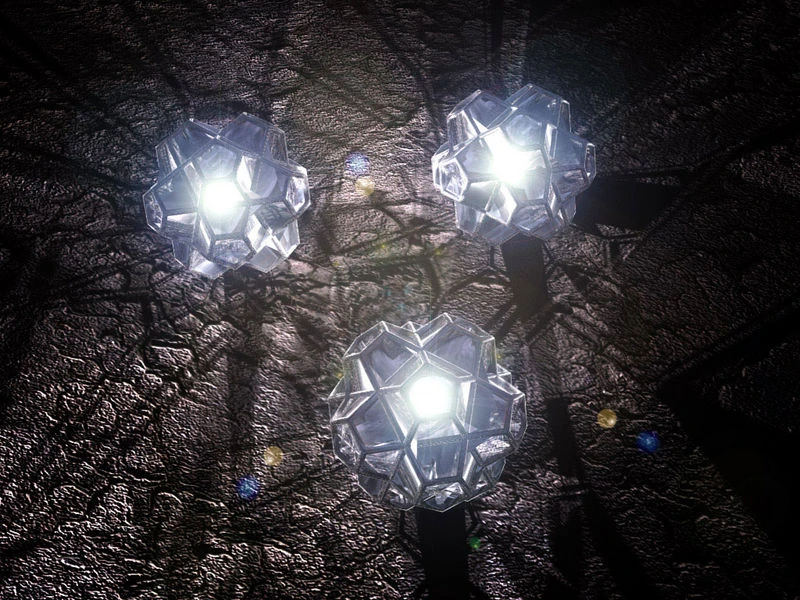
The Silmarils
Fëanor crafted these jewels, capturing the inner fire and blended light of the Trees of Valinor[cite: 4].
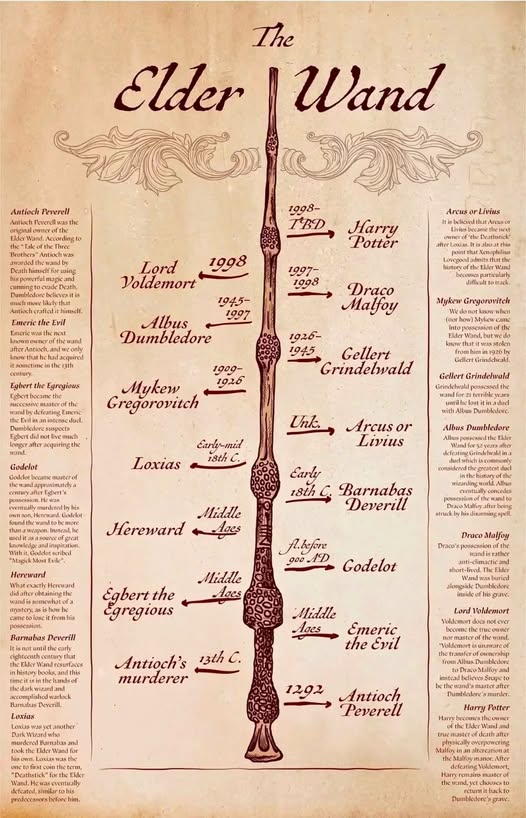
The Elder Wand
The most powerful wand in wizarding history, forged from elder wood.
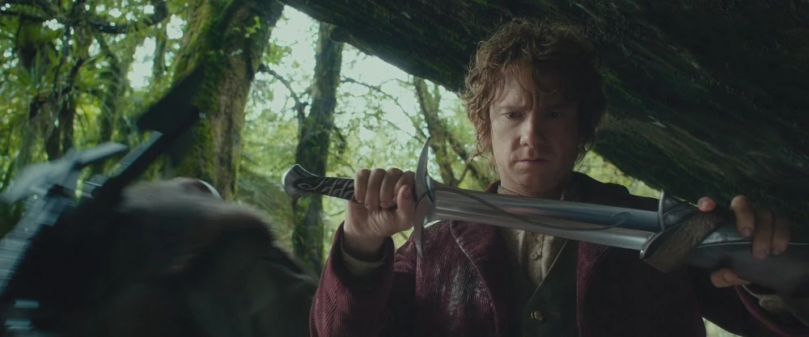
Sting
An Elven shortsword forged in Gondolin. It glows blue when Orcs are near.
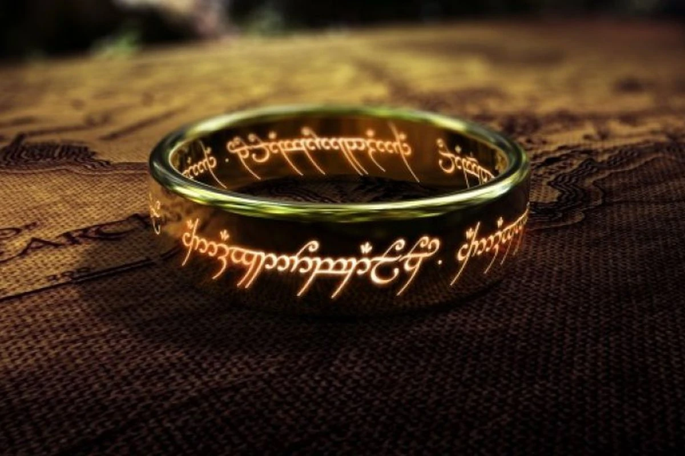
The One Ring
Forged in the fires of Mount Doom by Sauron to control the Rings of Power.
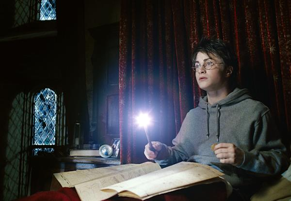
The Marauder's Map
A magical document revealing all of Hogwarts School and its secret passages.
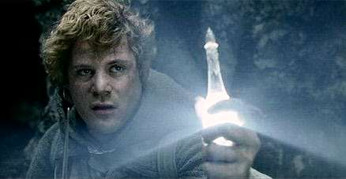
Phial of Galadriel
A crystal phial containing the light of Eärendil's star.

The Palantíri
Seeing stones crafted by Fëanor in the deeps of time in Valinor[cite: 4].
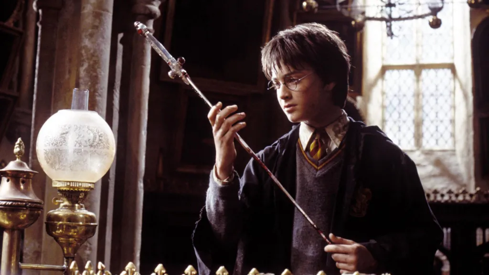
Sword of Gryffindor
A goblin-made sword formerly owned by Hogwarts founder Godric Gryffindor.
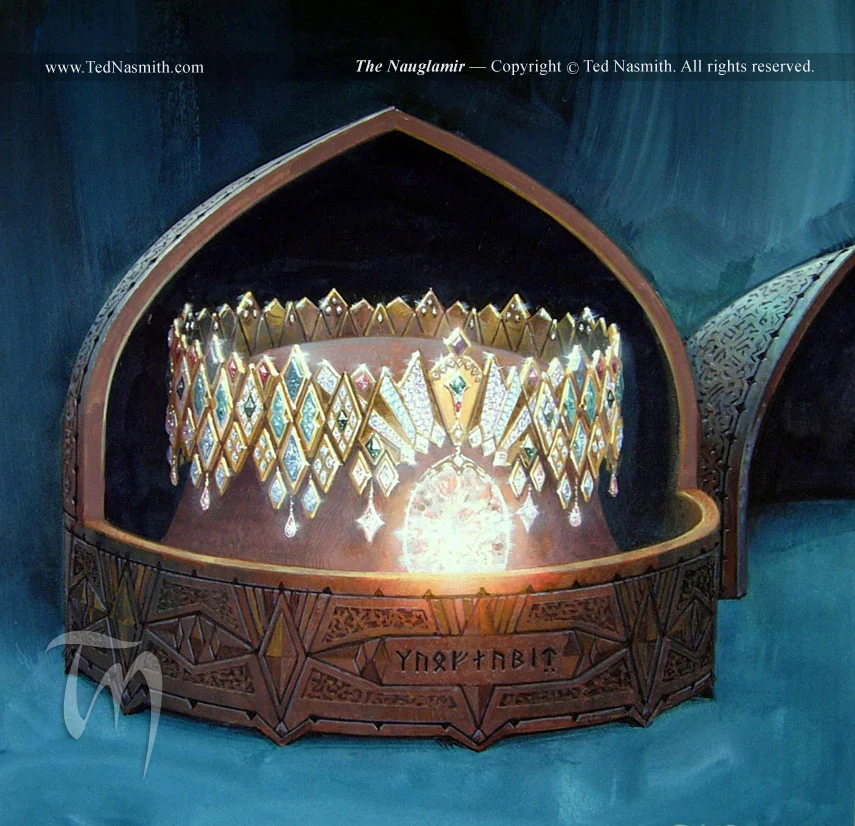
The Nauglamír
The Necklace of the Dwarves, originally made for Finrod Felagund. It is a carcanet of gold set with uncounted gems from Valinor[cite: 4].
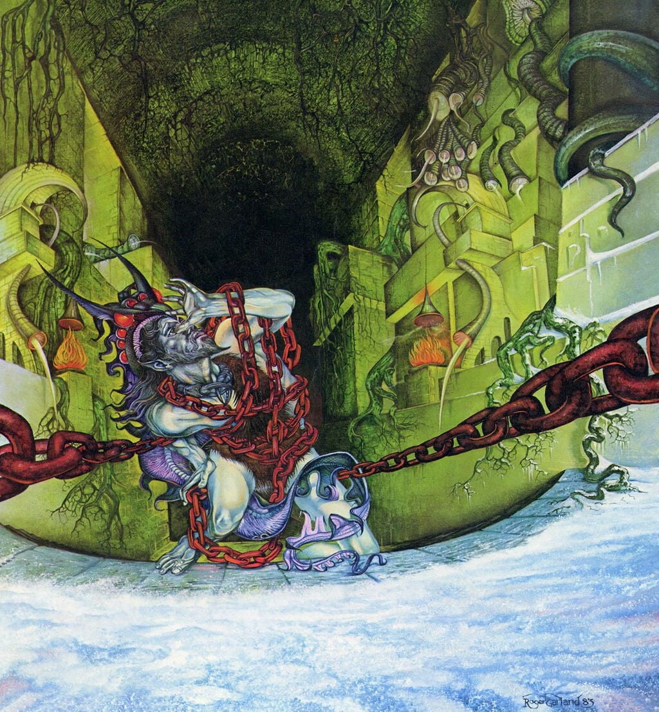
Angainor
The great chain wrought by Aulë the Maker, used by the Valar to bind Melkor after the siege of Utumno[cite: 4].
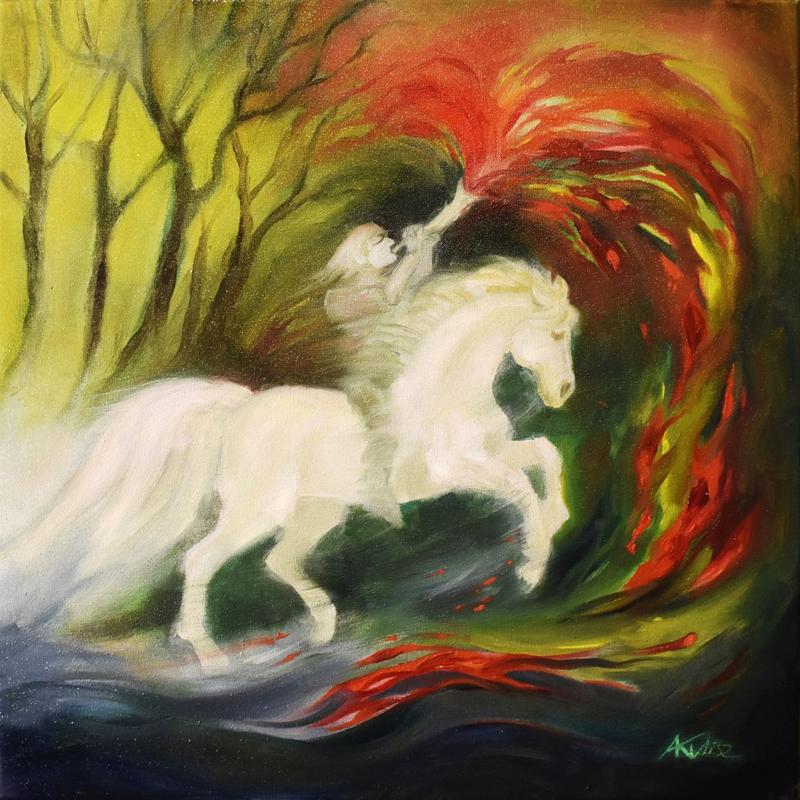
Valaróma
The great horn of Oromë, whose sound is like the upgoing of the Sun in scarlet, or sheer lightning cleaving the clouds[cite: 4].
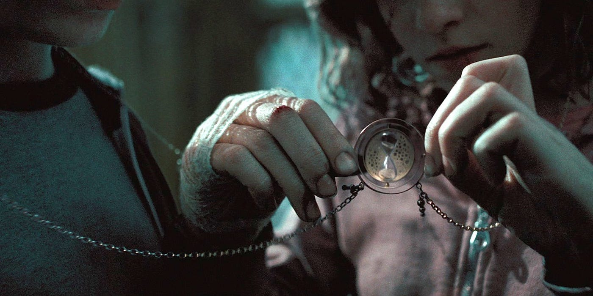
The Time-Turner
A magical timepiece used by witches and wizards to travel back in time and alter the fabric of past events.
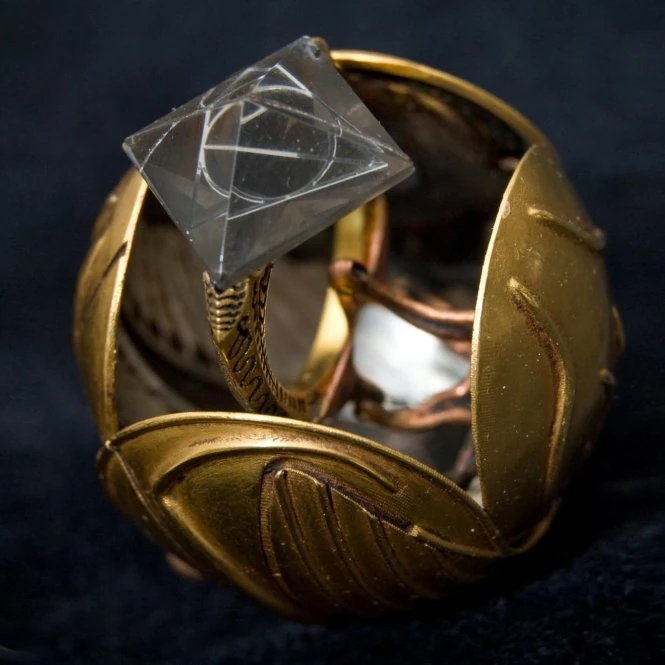
The Resurrection Stone
One of the three legendary Deathly Hallows, said to possess the power to recall the echoes of loved ones from the grave.
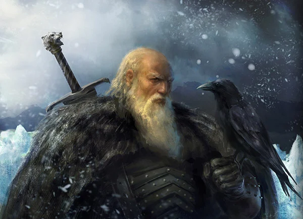
Longclaw
A legendary bastard sword forged of Valyrian steel. Passed down through House Mormont for centuries before finding its way to the Night's Watch.
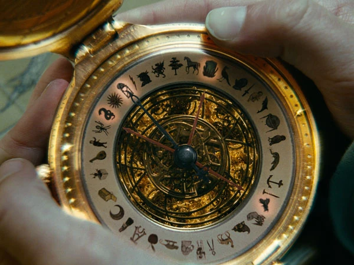
The Alethiometer
A rare, compass-like truth-telling device from Lyra's world. It uses multiple hands and esoteric symbols to reveal answers to those who can read it.